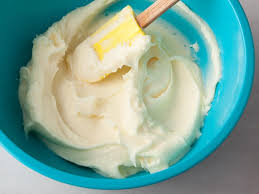

Cream Cheese Frosting

Description
Do you love frosting? Yeah, it's okay, but you know what sucks? When it is way too sweet.
For this recipe, we will focus on making a cream cheese frosting that is the perfect blend of sweet and airy.
Ingredients
- 8 oz cream cheese
- 4 cups powdered sugar
- 1 teaspoon vanilla extract
- 1/4 teaspoon salt
- 1/2 cup unsalted butter
Steps
- Soften butter
- Combine cream cheese and butter until creamy
- Add vanilla extract and salt. Stir to combine
- Add powdered sugar in small portions until completely integrated
- Taste and add more powdered sugar as desired
Home Page